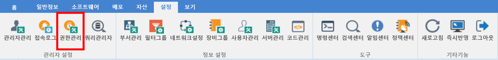

8-1-3. 권한관리
8-1-3. 권한관리
Source: https://www.sweeper.or.kr/etc/manual/8-1-3.html
8-1-3. 권한관리
8. 설정 ›› 8-1. 관리자 설정 ››


각각의 관리자에게 부여할 권한을 그룹으로 설정할 수 있습니다.

설정방법
-
추가버튼을 클릭합니다. 새그룹이 생성되며 각 권한별 설정을 합니다.

-
메뉴 권한 : 메뉴 보임에 대한 권한 설정입니다.
- 기능 권한 : 메뉴 화면에서 설정하는 기능들에 대한 권한 설정입니다.
-
명령 선택 : 에이전트에 전송할 명령 권한 설정입니다.
-
해당 메뉴 권한 내용에 마우스 우클릭하여 권한 설정 변경을 합니다.

-
설정이 완료되면 저장버튼을 클릭합니다.
참고사항
-
본 메뉴에서는 프린트 기능이 제공되지 않습니다.
-
슈퍼관리자는 설정한 권한과 관계없이 모든 권한을 가지고 있습니다.
-
변경된 권한은 콘솔을 재시작해야만 적용되므로 주의하시기 바랍니다.
© Copyright SWeeper Inc.. All Rights Reserved